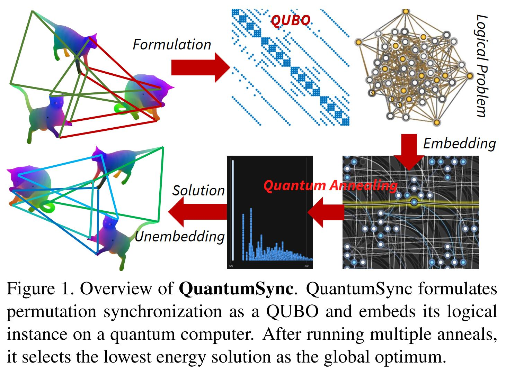

<meta name="viewport" content="width=device-width, initial-scale=1">
<link href='http://fonts.googleapis.com/css?family=Quicksand:300,400' rel='stylesheet' type='text/css'>
<link href='http://fonts.googleapis.com/css?family=Oxygen:400,300' rel='stylesheet' type='text/css'>
<link rel="stylesheet" href="style.css"/>
<link rel="stylesheet" href="https://maxcdn.bootstrapcdn.com/bootstrap/3.4.1/css/bootstrap.min.css">

<style>
	.markdown-body {
		box-sizing: border-box;
		min-width: 200px;
		max-width: 980px;
		margin: 0 auto;
		padding: 45px;
	}

	@media (max-width: 767px) {
		.markdown-body {
			padding: 15px;
		}
	}
</style>
<article class="markdown-body">
    <h1 style="text-align:center">Quantum Computer Vision</h1>
    
    <br>
    <h5 style="text-align:center">
    <div class="container" style="text-align:center">
    <div class="match-author"><a href="http://tbirdal.me/"><br><p>Tolga Birdal</p></a></div>
    <div class="match-author"><a href="https://people.mpi-inf.mpg.de/~golyanik"><br><p>Vladislav Golyanik</p></a></div>
    <div class="match-author"><a href="https://people.mpi-inf.mpg.de/~theobalt/"><br><p>Christian Theobalt</p></a></div>
    <div class="match-author"><a href="https://profiles.stanford.edu/leonidas-guibas"><br><p>Leonidas Guibas</p></a></div>
        </div>
        </h5>
    <p></p>
    
    <!--[Stanford University](http://www.stanford.edu) & [Technical University of Munich](http://www.tum.de) & Siemens AG-->
    <p></p>
    <h5 style="text-align:center"><a href="http://geometry.stanford.edu">Stanford University</a>&nbsp;&nbsp;&nbsp;&nbsp;&nbsp;&nbsp;&nbsp;&nbsp;<a href="http://www.tum.de">Max Planck Institute for Informatics, SIC</a></h5>
    <p></p><p></p><br>
    
   <div class="row">
                <div class="col-lg-12 col-lg-offset-0 text-center">
                    <ul class="nav nav-pills nav-justified">
                        <li>
                            <h4><strong>Quantum Permutation Synchronization</strong></h4>
                                <p></p><p></p><br>
                            </a>
                        </li>
                    </ul>
                </div>
        </div>
        
       <div class="text-justify">
        <div class="row">
            <div class="col-lg-6 col-md-6 col-sm-12 col-xs-12">
                We present <strong>QuantumSync</strong>, the first quantum algorithm for solving a synchronization problem in the context of computer vision. In particular, we focus on permutation synchronization which involves solving a non-convex optimization problem in discrete variables. We start by formulating synchronization into a quadratic unconstrained binary optimization problem (QUBO). While such formulation respects the binary nature of the problem, ensuring that the result is a set of permutations requires extra care. Hence, we: (i) show how to insert permutation constraints into a QUBO problem and (ii) solve the constrained QUBO problem on the current generation of the adiabatic quantum computers D-Wave. Thanks to the quantum annealing, we guarantee global optimality with high probability while sampling the energy landscape to yield confidence estimates. Our proof-of-concepts realization on the adiabatic D-Wave computer demonstrates that quantum machines offer a promising way to solve the prevalent yet difficult synchronization problems.
            </div>
            <div class="col-lg-6 col-md-6 col-sm-12 col-xs-12">
                
            </div>
        </div>
    </div>
 <p></p><p></p><br>

    <div class="row">
                <div class="col-lg-12 col-lg-offset-0 text-center">
                    <ul class="nav nav-pills nav-justified">
                        <li>
                            <a href="https://arxiv.org/pdf/2101.07755.pdf"><h4><strong>CVPR'21 Paper on Quantum Permutation Synchronization</strong></h4>
                            <image src="docs/CVPR21_thumb.jpg" height="480px">
                                
                            </a>
                        </li>
                    </ul>
                </div>
        </div>

<h2>Citation</h2>
    <blockquote>
  @inproceedings{birdal2021cvpr,
  <br>title={Quantum Permutation Synchronization},
  <br>author={Birdal, Tolga and Golyanik, Vladislav and Theobalt, Christian and Guibas, Leonidas},
  <br>journal={Proceedings of IEEE/CVF Conference on Computer Vision and Pattern Recognition (CVPR)},
  <br>year={2021}
  <br>}<p> </p>
</blockquote>

<h2>Funding</h2>
    The work was supported by the ERC Grant 4DReply (770784), a Vannevar Bush Faculty fellowship, a grant from the Stanford-Ford Alliance and gifts from Amazon AWS and Snap, Inc.

<h2>Interested in Collaborating with Us?</h2>
    We would like this project to evolve towards a repository of methods for handling challenging (3D) computer vision problems using Quantum computers. Therefore, we look for contributors and collaborators with great coding and mathematical skills as well as good knowledge in 3D vision, machine learning and quantum computation. If you are interested please send an e-mail to <strong>Tolga</strong>.

    
</article>
